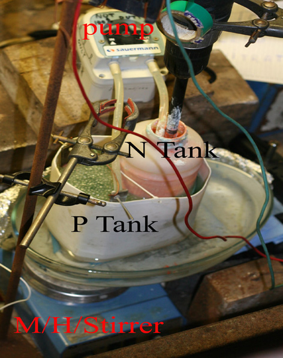
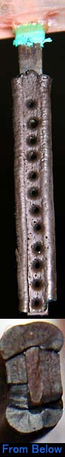
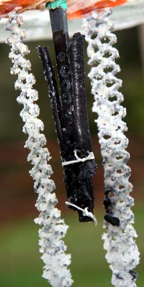
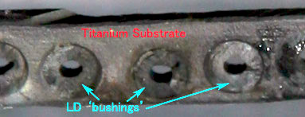

|
The previous Anode was a failure due to plating rig problems. The Alpha bath also refused to give a good even coating of Alpha Lead Dioxide so it was decided not to use an Alkali Alpha bath but rather to use a Lead Nitrate bath throughout for this Anode. Alpha LD can be deposited from the Lead Nitrate bath if you use a high current density (60mA per square cm) and if the acid concentration is from 18 to 30 grams per litre. I am not 100% sure if I did achieve Alpha LD as I do not know if Alpha LD is deposited from the Lead Nitrate bath when acid is at the lower concentration that my bath was run at (about 10 grams per liter, pH 0.8). pH was checked with a professional meter/probe and was calibrated.
A piece of Titanium was coated with ATO and placed into the Lead Nitrate bath. The power supply (constant current type) was connected to the Anode and Cathodes before placing the Anode into the tank.
There were no Nitrites at the start of plating as shown by Aquarium testing kit.
A pumping rate 17ml per minute per Amp was required when the pH of the plating tank was kept at around pH = 0.9. The pH of the neutralizing tank was around 3.6.
Some green insulating tape was wound around the substrate so that the LD would have an abrupt end. The fluid level in allowed to fall anywhere on the tape and plating will commence at the bottom edge of the tape. This is not a good idea as the Lead Dioxide grows up around and over the tape (as seen in photo) and has no support. A plastic baffle would be better or perhaps nothing at all which usually gives a tapered edge to the Lead Dioxide.

The plating set up is shown in the picture. It contains two liters of fluid. It is a ghetto type of set up but done the job OK. Containers are PE. The P-Tank is the plating tank and consisted of a 2.5 liter can with the top cut off. A perspex sheet was placed in the bottom and hot-melted to give a good flat bottom for the magnetic stirrer bar to function. The N-Tank (neutral) is just a one litre can with half inch holes cut half way down and covered with a polyester cloth to act as a filter. This N-Tank is placed inside the P-Tank. Do not use cable ties (Nylon?) in the plating tank as they become brittle after approx. 24 hours and break. Silicon sealer fails too. The plastic air-stone used to agitate a tank broke too. The plating solution is aggressive toward certain plastics, so beware. Teflon tape is good for tyeing things if needed.
The Ti substrate had a Tin Oxide coating applied as per the last Anode. The substrate was very narrow and a bit too thick at 2 MM. It would have been better if is was 1.5 MM as perhaps the holes would have plated better and filled in completely. The holes in the substrate were 4mm dia. and were counter sunk a small amount (not enough). The substrate had a surface area of 16cm squared and weighed 8.2 grams. It measured 8cm by 0.2cm by 0.8cm. [edit] The substrate proved too thick and should be tapered at the edge more IMO with perhaps serations or 'semi-holes' drilled at the edges something like the diagram.
An Alkali Alpha LD bath was not used and instead a high current density was used for the first two hours to give an (hopefully) Alpha coat. High current density also causes a high density of initial nucleation sites on the substrate.
The total plating time was 23.4 hours. Total Ah's passed was 12.407 (0.463 moles). Total LD plated 55.3 grams. This works out at 99%CE. (one mole LD = 239.2g and two moles of e- are required per mole LD). It would appear that Nitrites are not a problem if Red Lead is used in the tank. Nitrites lower plating current efficiency and perhaps give bad wearing coats of LD.
This picture shows a similar substrate but not the actual substrate that was coated.
| ||
Using the AnodeRun One
The Anode was put into a Sodium Chlorate 3.8 liter cell that had (approx.) 600 grams per liter Sodium Perchlorate + 6.7g/l Chlorate and run at 5 Amps (approx. 140mA per square cm). The Chloride level would have been low but not measured. Cell temperature was around 32°C. The two Cathodes of Ti mesh (old MMO) had approx. 60cm squared surface area (four sides total).
Run TwoAnother cell was set up as above by simply adding some Sodium Chlorate to the cell. The concentration of Sodium Chlorate was 7.3 grams per liter. Cathodes as above. This was a 'Chlorate scavenging' role for the Anode. This cell was run at a high pH to see if it made any dramatic changes to the %CE. 3.7grams NaOH was added to the cell and this raised the pH from 3.7 to 10.5. It stayed around 10 for the duration of the run.The Chlorate concentration fell by 2.16 grams per liter over the first 43.5 hours (Chlorate conc. now 5.14g/l) which was a %CE of 1.9%. Over the four days the concentration of Chlorate was reduced to 1.6 grams per liter, a %CE of 1.4%. There is no advantage in operating a Perchlorate cell which has a very low concentration of Chlorate ('Chlorate scavenging') at a high pH. Also bear in mind that it has been reported that Anode dissolution occurs at a pH of 11. The cell was let run for another two days. The Chloride (Cl-) concentration of the Cell was checked at the end of the run and found to be less than 0.5 grams per liter. The cell was let run for another 4 days and shut down. The Voltage across the cell at the end of run was 4.62 Volts. The Anode had been running for a total of 3 weeks. The Anode was dried and weighed and had lost no weight (still 84 grams).
Run Three
After another 23 hours of operation the Chlorate concentration was 8 grams per liter, a CE of 2.7% After another 26 hours of operation the Chlorate concentration was 6 grams per liter, a CE of 1.5% After another 67 hours of operation the Chlorate concentration was 2.3 grams per liter, a CE of 1.05% After another 51 hours of operation the Chlorate concentration was 1.2 grams per liter, a CE of 0.4% After another 94 hours of operation the Chlorate concentration was 0.4 grams per liter, a CE of 0.16% The cell was let run for another day and stopped.
The pH of the cell at the start was five. 2cc of 12% HCl was added which lowered pH to 2.5. After one day pH was
5 and 1cc acid was added to lower pH to 2.5. Another 24 hours later pH was 7.2 and 2cc acid was added to take pH to 2.5. Seventy two hours later pH was still 2.5 and had decreased to 2.0 just before the cell was stopped.
A white deposit formed on the Cathodes which could be brushed off easily. Lead Sulphate perhaps?
|
|

Another cell was cranked up using recycled Salt + Chlorate solids and solutions of Chlorate from various sources. The cell container was the same as in the runs above, 3.8 liters, mesh Cathodes etc. Current into the cell was a constant 7.14 Amps, 200mA per square cm Anode current density. There were no additives added but it was not known if additives were in any of the 'slops' that were put together to make up the cell liquor.
The Anode was inspected at the end of the run and found to have some large cracks as shown in the picture. The 'meteorite' of Lead Dioxide had fallen off the bottom and the nodules of Lead Dioxide that had grown over the insulation tape (green) at the Anode top had partially fallen off (day 13) as stated above (see picture). |
|

A cell containing dissolved Potassium Chloride was started up to run up some time on the Anode.
Two pieces of Teflon tape were tied around the Anode where the cracks were to help to stop it from splitting any further.
The cell was pH controlled at around 6.90 and ran at a modest five Amps. After three days of operation the Anode was inspected and was as shown in the picture. The Anode had met it's Waterloo! It was assumed that making Potassium Chlorate did not seem to 'agree' with it, as making Sodium Perchlorate would not (IMO) have caused the de-lamination of the LD to have happened so rapidly if at all. Perhaps solid K Chlorate is inclined to precipitate between the LD and the substrate and heave out the LD? The LD was riped from the sides of the substrate leaving behind 'bushings' of Lead Dioxide in the substrate holes as shown in the picture. The Lead Dioxide between the two Teflon tyeings was bulged out not unlike bulging rust on Iron. Potassium Chlorate can be seen on the Cathodes.  This Anode has been in operation for a total of 112 days.
|
HIT THE BACK BUTTON ON YOUR BROWSER